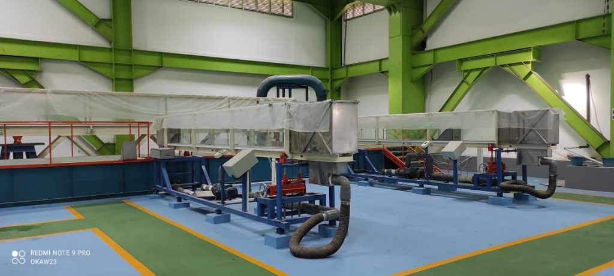
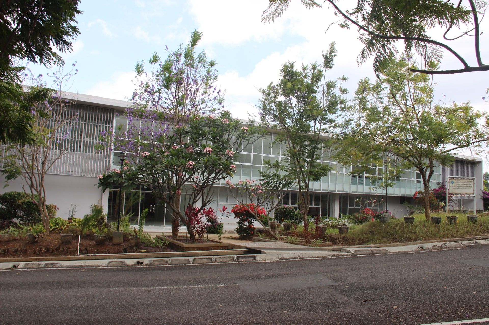
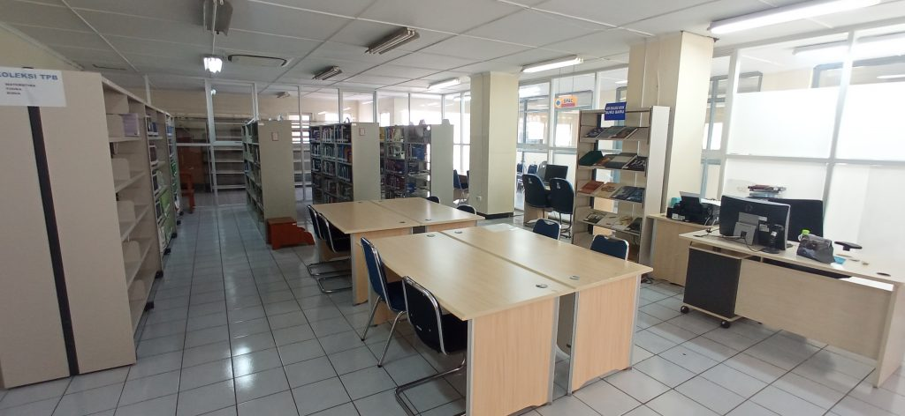

Sarana & Prasarana
Mendukung kegiatan akademik dan penelitian mahasiswa secara komprehensif.

Laboratorium Hidrolika
Laboratorium utama untuk simulasi model fisik aliran air, dilengkapi dengan berbagai fasilitas canggih untuk studi bendungan, hidraulika sungai, dan rekayasa pantai.
Peralatan :
- Open Channel Flume
- Kolam Gelombang
- Alat Ukur Kecepatan

Laboratorium Sedimentasi & Model Fisik Hidraulik
Fasilitas ini dikhususkan untuk analisis transportasi sedimen serta pembuatan model fisik 3D. Mahasiswa dapat membangun dan menguji model skala bendungan, sungai, dan bangunan air lainnya untuk menganalisis dampak gerusan, pengendapan, dan stabilitas struktur.
Peralatan :
- Model Fisik Bangunan dan Pompa Air
- Analisis Gradasi Butiran
- Pengukur Kekeruhan

Perpustakaan
Menyediakan koleksi lengkap buku, jurnal ilmiah (nasional dan internasional), serta referensi digital yang fokus pada bidang hidrologi, hidraulika, dan manajemen sumber daya air.
Koleksi :
- Jurnal Ilmiah & Buku Teks
- Akses E-Journal
- Arsip Tugas Akhir & Disertasi